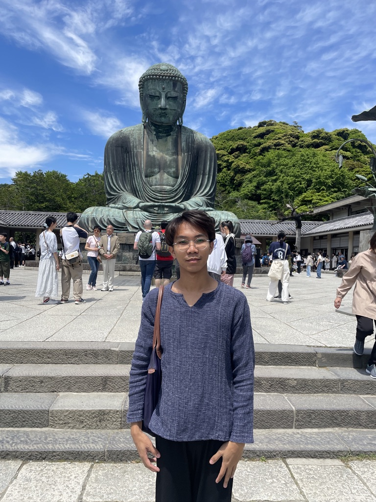

Hello there! I'm Pookan.
Pattaradanai Thanomsittikul (ภัทรดนัย ถนอมสิทธิกุล)
I am a second-year Computer Engineering student at Chulalongkorn University with a genuine passion for Artificial Intelligence and Machine Learning. I’m eager to learn, grow, and apply my skills to create impactful solutions that solve real-world problems.
Experience
Education
Competitions and Certifications
- 3rd place in Chula Legaltech Year 6